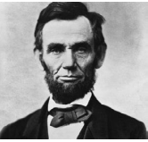

10
Years of Success
800+
Projects Completed

Hello I'm ESWARI SUBRAMANIAM Web Developer from Malaysia
Welcome to my digital space! I'm ESWARI, a passionate and versatile developer dedicated to crafting exceptional digital experiences. With a keen eye for detail and a love for problem-solving, I specialize in [mention your primary skills or technologies]. From building robust web applications to creating elegant mobile solutions, my goal is to seamlessly blend creativity with functionality. Explore my portfolio to witness my journey in code, and feel free to reach out for collaborations or just to geek out about the latest tech trends. Let's turn ideas into reality, one line of code at a time.


I'm a Developer
I Develop Application that Help People
Explore my portfolio to witness my dedication to innovation, and feel free to reach out for collaborations or to geek out about the latest tech trends. Let's build something amazing together! 🚀
View PortfolioCOURSE Details
Portfolio
My Amazing Works
Explore my latest work for insights on web development trends, coding tips, and industry updates. Stay informed and inspired as I share my experiences and knowledge in the dynamic world of technology.
Course Members
STUDENTS DETAILS
SEMESTER: 1 2023/2024
SECTION: SECTION53
LECTURER’S NAME: ASSOCIATE PROFESSOR DR. JAMILAH AHMAD
| BIL | NAME | CONTACT NUMBER | |
|---|---|---|---|
| 1. | SURAYA NAJIHA BINTI MOHD ISHAK | 01128965007 | surayanajiha@graduate.utm.my |
| 2. | NURNAZIDA BINTI NAZRI | 0104002981 | nurnazida@graduate.utm.my |
| 3. | NAJLA ZAID JAWAD | +971567491128 | jawadnajla@graduate.utm.my |
| 4. | SUHAINA BINTI MOHAMED ZAKI | 0199109110 | suhaina4@graduate.utm.my |
| 5. | NOR SURIA HAZNI BINTI CHE HUSAIN | 0126919521 | norsuriahazni@graduate.utm.my |
| 6. | NUR RAFIDAH BINTI MOHAMAD LAZI | 01119663404 | nurrafidah@graduate.utm.my |
| 7. | WONG MEI TENG | 0167270230 | wongmeiteng@graduate.utm.my |
| 8. | ILLY NADHIRAH BINTI BARUDIN | 0195004239 | illynadhirah@graduate.utm.my |
| 9. | NURDAFIKAH BINTI ROSLAN | 0196057480 | nurdafikah@graduate.utm.my |
| 10. | NIROSHINEE A/P SUKUMARAN | 0177035841 | niroshineesukumaran@graduate.utm.my |
| 11. | FARAH ANIZA BINTI SHAHRI | 0129809861 | farahaniza@graduate.utm.my |
| 12. | NUR QISTINA BINTI MOHD AZHAR | 0189007022 | qistina99@graduate.utm.my |
| 13. | NORLILAWATI BINTI SUBOH | 0182930374 | norlilawati@graduate.utm.my |
| 14. | SARASVATHY KANNIAH | 0127250871 | sarasvathy@graduate.utm.my |
| 15. | SHARIFAH NURLIYANA BINTI SYED NASIR | 0137605694 | sharifahnurliyana@graduate.utm.my |
| 16. | NOR HASLINDA BINTI MOHAMED NOR | 0199592613 | nor-79@graduate.utm.my |
| 17. | SHALMISYAM BINTI SHAHUDDIN | 0179378125 | shalmisyam@graduate.utm.my |
| 18. | ESWARI A/P SUBRAMANIAM | 0139099691 | eswari@graduate.utm.my |
COURSE TIMETABLE
| Week | Date | Dynamics of Leadership |
|---|---|---|
| 1 | 8 – 12 Oct 23 | Wednesday 8.30pm - 10.30pm |
| 2 | 15 – 19 Oct 23 | Wednesday 8.30pm - 10.30pm |
| 3 | 22 – 26 Oct 23 | Wednesday 8.30pm - 10.30pm |
| 4 | 29 Oct – 2 Nov 23 | Wednesday 8.30pm - 10.30pm |
| 5 | 5 – 9 Nov 23 | Wednesday 8.30pm - 10.30pm |
| 6 | 12 – 16 Nov 23 | Wednesday 8.30pm - 10.30pm |
| 7 | 19 – 23 Nov 23 | Wednesday 8.30pm - 10.30pm |
| 8 | 26 Nov – 2 Dec 23 (MID SEMESTER BREAK) |
|
| 9 | 3 – 7 Dec 23 | Wednesday 8.30pm - 10.30pm |
| 10 | 10 – 14 Dec 23 | Wednesday 8.30pm - 10.30pm |
| 11 | 17 – 21 Dec 23 | Wednesday 8.30pm - 10.30pm |
| 12 | 24 – 28 Dec 23 | Wednesday 8.30pm - 10.30pm |
| 13 | 31 Dec – 4 Jan 24 | Wednesday 8.30pm - 10.30pm |
| 14 | 7 – 11 Jan 24 | Wednesday 8.30pm - 10.30pm |
| 15 | 14 – 18 Jan 24 | Wednesday 8.30pm - 10.30pm |
| 21 – 27 Jan 2024 (STUDY WEEK) |
||
| 28 Jan – 20 Feb 2024 (FINAL WEEK) |
Profile
I'm a Developer
I Develop Application that Help People
Master of Education (Educational Technology) ODL
MATRIC NO: MPP231014
Course: Dynamics of Leadership (UPPF 6033)
Contact No: 0139099691
Address: No.37, Jalan EJ 2/13, Taman Ehsan Jaya, 81100, Johor Bharu, Johor.
Email Address: eswari@graduate.utm.my
MY OVERALL REFLECTION
Dynamic leadership requires a good balance of self-growth and development, the ability to teach and engage others, a commitment to service, and a shared purpose for organizational values. Additionally, dynamic leadership works best when such leaders ethically and responsibly use their power as a means to influence a follower’s advancement and growth. Through the Dynamic Leadership course, I became adapt in the importance of the leadership-followership principles and in different individual styles and personalities through the Big Five Personality Test and the leadership code rules. These theories have taught me how to approach people based on their specific and unique style, how to utilize my specific strengths to help engage others, and how to be more flexible and collaborative in times of crisis. In fact, this course taught me the importance of accountability and trust between leaders and followers. Many leaders must also wear the hat of management, which requires even more support and communication. To achieve this, both must foster a relationship that can include reciprocity, a healthy debate, and open communication. Furthermore, “the better you know your boss, the easier it is to take initiatives or risks by presenting the actions in a logical way with targeted outcomes that are acceptable” (Johnson, 2011, p. 35). Although I was initially unreceptive to my leadership team, I am now more appreciative of their initiative and more open to see the progress that is made quarterly. To further this receptiveness, this course taught me that action-centred leadership was the theory that best reflected my organization. Action-centred leadership consists of a continuous balance of completing projects, preserving employees, and pushing professional development (Williams, 2005). As of a result of this successful balance and effectiveness, I am engaged, I am committed to do my job exceedingly well, and I am eager to explore growth opportunities. Lastly, this course validated that I can be myself and utilize my personality and skillset to be an effective, high performing leader. Jack Welch says it best, “Be yourself. Absolutely don’t try and be someone else” (HSM Global, 2013d). This course also helps me incorporate my team mate with my goal and objective regarding the company. By making plans for training that are needed and by supporting my teammate with their goals.
GROUP PRESENTATIONS SCHEDULE
| Session | DATE | MODULE/ TITLE | GROUP | GROUP MEMBERS |
|---|---|---|---|---|
| 1 | 11/10 | Course Introduction Introduction To Leadership |
- | - |
| 2 | 25/10 | Leadership Traits and Ethics | 1 | 1. Rafidah 2. Suraya Najiha 3. Yokeswari 4. Niroshinee Sukumaran 5. Suria Hazni |
| 3 | 8/11 | Contingency Leadership Theories | 2 | 1. Farah Aniza Shahri 2. Sarasvathy 3. Suhaina Mohamed Zaki 4. Illy Nadhirah |
| 4 | 6/12 | Team Leadership | 3 | 1. Nurdafikah Roslan 2. Sharifah Nurliyana Syed Nasir 3. Norlilawati Suboh 4. Nur Qistina |
| 5 | 20/12 | Level 5 Leadership | 4 | 1. Nurnazida Nazri 2. Wong Mei Teng 3. Najla Zaid 4. Shalmisyam 5. Norhaslinda |
| 6 | 20/12 | Authentic Leadership | 5 | 1. Chelva Kumari Arumugam 2. Eswari Subramaniam |
COURSE TOPICS
- TOPIC 1: INTRODUCTION TO LEADERSHIP
- TOPIC 2: LEADERSHIP TRAITS AND ETHICS
- TOPIC 3: LEADERSHIP BEHAVIOUR AND MOTIVATION
- TOPIC 4: INFLUENCING: POWER, POLITICS, NETWORKING AND NEGOTIATION
- TOPIC 5: CONTINGENCY LEADERSHIP THEORIES
- TOPIC 6: COMMUNICATION, COACHING AND CONFLICT SKILLS
- TOPIC 7: DYADIC RELATIONSHIP, FOLLOWERSHIP AND DELEGATION
- TOPIC 8: TEAM LEADERSHIP
- TOPIC 9: LEADING SELF-MANAGED TEAMS
- TOPIC 10: CHARISMATIC AND TRANSFORMATIONAL LEADERSHIP
- TOPIC 11: LEVEL 5 LEADERSHIP
- TOPIC 12: AUTHENTIC LEADERSHIP
Weekly Reflection
- Week 1
- Week 3
- Week 5
- Week 9
- Week 11
- Week 14
Leadership is the action of leading others or an organization. I feel like it is when someone steps up and goes into the unknown as well. It is also important to mention that it is never just one single person. To be a successful leader I also agree that one needs to have certain characteristic and skills. A leader needs to be able to simple lead, as you have stated. They need to direct and guide people to fulfil shared goals. Communication is also another huge skill. A leader needs to be able to clearly communicate, build relationships, motivate others, inspire others, and be a role model to create a positive work environment and culture that will accept change and innovation in the company. Leaders also need to show everyone how to behave, and they need to be honest, show appreciation, and work towards a bright future. If a leader is not effective the whole company can fall apart. Leadership is all about the relationship between those that aim and strive to lead and those who select and follow them and work together on shared goals. I agree that poor leadership can also lead to poor customer satisfaction and also decrease profits. Being an exemplary leader does make a difference, so all of the characteristics, skills, and more you have mentioned are very important.
I must admit this has encouraged me to really come out of my comfort zone and work harder than ever before. Leadership and Ethics opened my eyes to what leadership really means, I learned that people aren’t necessarily born leaders, that leadership (more importantly, good leadership) can be learned, practiced, and mastered. I also learned that I can be my biggest roadblock to my own success as well as the biggest positive influence. It does not matter the rank, position or status, anyone can lead anyone else. In this course I became more introspective about my current leadership roles and the tweaks I could make to communicate more effectively and be a “better” leader In this course I discovered to better understand the beliefs of others and understand how what you do can impact others. Self-awareness is a huge part of it is having a clear perception of your personality, including strengths, weaknesses, thoughts, beliefs, motivation, and emotions. Self-Awareness allows you to understand other people, how they perceive you, your attitude and your responses to them in the moment. Motivating others requires making others feel understood, leadership is not just a cliché about leading by example or other vague tenet, it involves more interaction and engagement. I think the most important thing that I learned was how to understand my own motivations / emotions.
I observed that the theory is also popularly used because gives the leader the capacity to develop a high self-esteem and self-confidence. When a leader has developed these skills, the leader is therefore capable of influencing others while trying to handle different situations in different times. Determination means that the desire that a leader has in ensuring that a situation is handled properly. I personally learned that determination is an important attribute that characterizes a leader. A leader who is determined is very much proactive and is willing to do a lot of things to ensure that they achieve their set objectives in the required time. A highly determined leader according to the contingency theory is very much willing to persevere in handling a situation until he or she ensures that the situation is handled properly. According to this theory the leader is very effective meaning that he is able to show that he or she is the dominant factor in handling various situations. This type of leader never gives up on anything that he or she does within an organization. I realised that the theory helps in developing a leader who is extraversion. According to this personality, a contingent leader should have the tendency of being assertive. Assertiveness means that a leader is very much alert while handling various situations that affects them. A leader who has the personality of being extroversive also has a positive energy. Having a positive energy implies that the leader feels that even when a situation arises, he or she can find a way to find a solution to the problem. This type of leader is willing to go through extra miles to ensure that he or she achieves the goals of the organization. in addition, according to the contingency theory, an extroversive leader is usually relationship oriented and in most cases this leader finds ways of ensuring that he is sociable to people at all times.
In addition to recognizing the importance of work-life balance, this topic has helped me nurture skills that are crucial in the promotion of an effective balance between work and other aspects of life. As I was going through the topic, I was able to balance my commitments in the program with my personal life. This helped me to reduce stress and so I approached my responsibilities positively and with great energy. Furthermore, valuable tips on how to maintain proper work-life balance including the need to exercise and meditate, not to seek perfectionism, to always have a schedule and adhere to it, and ensure I stay healthy. Teamwork concepts are another crucial thing that I learned from this topic and the essential importance of teamwork in leadership and the various ways through which effective teamwork can be promoted. A team is simply a group of people who work together, cooperate with, and depend on each other towards the attainment of common goals and objectives. As a leader, it is important to possess adequate teamwork skills and knowledge. Teamwork is an integral component of the success of any given organization and so it is critical for leaders to possess the requisite knowhow to facilitate proper and effective teamwork within their spheres.
This is the level that I have some experiences in my both personal and career life. As a leader, I made a good personal relationship by showing interest in my colleagues’ personal life. I tried to recognize their strengths and weakness by approaching them, and reinforce their strengths positively when I saw they were using them. The relationship between us was based on trust and reliability and that good personal relationship had created positive energy. In this level, your domination and prestige come by your job title, and people follow you because they have to. In this level, good leaders not only create a pleasant working environment but also, they get things done. I believe this is the level that every leader wishes to achieve it one day, and it is my wish as well and I would try my best to be in this level as best I can in the future.
I have had the opportunity to work with leaders of different styles, and by just watching them, listening to them and seeing how the staff reacts. I can gauge what is productive with their staff. I try not to copy or mimic their style and ensure my own style comes through in being consistent, authentic and genuine. I feel by following these traits they give me necessary foundation and help me towards achieving leadership excellence. I have not had the pleasure of working with a true authentic leader yet, but my current manager is one of the closest. My current manager inspires me to be in control of my own destiny, make my own decisions and providing feedback to better myself in the future. He can be firm when he wants to, but as we have worked together for a number of years and I respect him, so we can have candid discussions. He is proficient in everything he does and often when we work together on information for the executives, he will almost always refine and change the information I provide, to be relative for them. He has good communication and verbal skills.
My Skills
I Develop Skills Regularly
Explore my latest blog posts for insights on web development trends, coding tips, and industry updates. Stay informed and inspired as I share my experiences and knowledge in the dynamic world of technology.
-
CSS
95% -
React
75% -
MongoDB
90% -
Python
70% -
PHP
80% -
JavaScript
75%
Appreciation Note
-

Note : "WHAT YOU GIVE YOU GET BACK"
Dr Jamilah Binti Ahmad
Associate Professor
School of Education,
Faculty of Social Sciences and Humanities,
Universiti Teknologi Malaysia,
81310 UTM Johor Bahru, Johor, MalaysiaEmail: jamilah_ahmad@utm.my
Website: people.utm.my/jamilah_ahmad
Department of Educational Foundation & Social Science
- APEL C Advisor
- Royal Advisor to Sultan of Bintan, Province of Riau (2020-2030)
- Certified Massive Open Online Courses (MOOCs) Instructor
- Certified Open & Distance Learning (ODL) Instructor
- Certified Neuro-Linguistic Programming (NLP) Trainer
- Certified Law of Attraction (LOA) Trainer
Don't be shy
Drop Me a Line
-
Address
No.37, Jalan EJ 2/13, Taman Ehsan Jaya, 81100, Johor Bharu, Johor. -
Email
eswari@graduate.utm.my -
Phone
0139099691
Transformational Leadership
Definition
Transformational leadership is a leadership style in which leaders encourage,inspire and motivate employees to innovate and create change that will helpgrow and shape the future success of the company. This is accomplished bysetting an example at the executive level through a strong sense of corporateculture,employee ownership and independence in the workplace.
Transformational leaders inspire and motivate their workforce without micromanaging — they trust trained employees to take authority over decisions in their assigned jobs. It’s a management style that’s designed to give employees more room to be creative, look to the future and find new solutions to old problems. Employees on the leadership track will also be prepared to become transformational leaders themselves through mentorship and training.
-
Transformational Models
The concept of transformational leadership started with James V. Downton in 1973 and was expanded by James Burns in 1978. In 1985, researcher Bernard
M. Bass further expanded the concept to include ways for measuring the success of transformational leadership. This model encourages leaders to demonstrate authentic, strong leadership with the idea that employees will be inspired to follow suit.
The Transformation Model is the framework we use to help leaders understand their organizations and guide a successful redesign. The model reduces the complexity of an organization to eight key variables that must be understood and aligned for a business to be successful. Alignment implies a holistic or systems point of view that finds the best "fit" between all organizational elements. Paying attention to and understanding these variables will result in major improvements in customer service, quality, efficiency, cycle time, profitability, and employee satisfaction.
-
Transformational Leadership Dimension
Transformational Leadership is viewed as a positive force to mobilize organizations, making it an important facilitator of organizational change (Bass & Riggio, 2006). Transformational leaders work with their employees to implement change, creating a vision for their followers and guiding the change through inspiration and motivation. They serve as excellent role models, and their followers emulate many of their actions (Awamleh & Gardner, 1999; Northouse, 2018).
Transformational leaders also inspire by activating follower self-efficacy, instilling the belief that followers can go beyond expectations (Barth-Farkas & Vera, 2014). The core of Transformational Leadership consists of the following four dimensions:
-
Individual consideration is the extent to which a leader attends to each follower’s needs and serves as a mentor, coach, or guide to the follower.
| Strength |
|---|
| United in a common cause |
| Quickly analyzes a company’s current situation |
|---|
| Create a righteous vision |
| Get everyone on board |
| Are always motivated to do |
|---|
| 1) Evolve |
|---|
| Keeps the company open and ethical |
| Being transparent |
|---|
| Laser-focused on the right thing |
| Stick to the straight & narrow |
|---|
| Act in the best interest of the company |
| 1) Values-driven and ethics-focused |
|---|
| Promotes morale through better communication |

Abraham Lincoln– President Lincoln’s transformational leadership ability is very impressive. Evaluating Lincoln’s transformational skills, first he was able to acquire the trust, loyalty, and respect of followers. Second, he had the ability to inspire people to keep making sacrifices in spite of hardships.
Lastly, the effectiveness of his appeal to followers’ ethical values in order to inspire them to “higher morality”
Lincoln used to visit the Army of the Potomac frequently. There, he treated the men, regardless of rank, with courtesy and respect. The men began to call him “Father Abraham” because they were sure that he would do his best to take care of them
Mahatma Gandhi
– Gandhi was an incredible man and role model to many people. He wanted to bring attention to India and its problems and he did so through his non-violent methods. At the time Gandhi was alive. India was in a crisis. Great Britain had rule over India and treated the Indian people like slaves. Crisis is a situational characteristic of transformational leadership. If there is no crisis, there isn’t any need for change or transformation.
India needed a change and Gandhi was the one who was going to be the leader of that change. He brought an entire country (India) out from under the rule of another (Great Britain). Certainly, the citizens of India at the time did not expect to ever be able to have freedom from the British. Gandhi was the man who helped them achieve this freedom. He could talk to a crowd of people and each member felt as if he was speaking directly to them. This is an example of a characteristic of transformational leadership called personalized leadership.
Nelson Mandela
– Mandela not only displayed great self-awareness and social awareness; he knew how to manage himself and relationships to get the most out of others. His transformational leadership style is as precious as it is rare, and his legacy provides ample inspiration for business leaders today. Mandela encouraged racial harmony in a country ripped apart by apartheid, practiced forgiveness toward his persecutors without forgetting the indelible mark they left on his country, and focused on the future, not the past. As a transformational leader, he successfully used the country’s love for sports to promote reconciliatory efforts by promoting Springboks rugby team (majority white) and hosted the Rugby World Cup in 1995 which further instilled a sense of nationalistic pride in its people and promoted reconciliation. Further under the new constitution, Mandela ensured that the rights of minorities and freedom of expression was incorporated under the system of black majority rule – Steve Jobs has to mandatorily be one of the names in the most iconic transformational leaders the world has ever seen. His passion for perfection, simplicity and sophistication drove the company and he made sure that it got engraved into every employee who worked at Apple. He constantly challenged his employees to think beyond what has already been done and made them create products that the world did not even know it needed. As a transformational leader, he has a characteristic of TL such as charismatic, vision-oriented, encouraging intellectual development of their followers, inspiring and motivating to higher levels of effectiveness. Transformative leadership motivates individuals to achieve unforeseen or remarkable results. It gives employees independence over particular work, as well as the ability to make decisions after they have been educated (Sun et al., 2017) The boundary crossing of teachers was not aligned with transformational leadership The boundary crossing of teachers was not aligned with transformational leadership and transformational leaders may facilitate team learning within the team, but they do not feel the urgency to allow teachers to cross borders. (Bouwmans et al., 2017) Transformational leadership has been suggested and researched as a promising leadership model for two decades in the USA and for around one decade in Mainland China. Although transformative leadership activities and their beneficial impacts on leadership performance and different school outcomes have been reported, far less is known about what gives rise to TL behaviors. (Sun et al., 2017) They need to address questions about their activities and actions (Bush, 2017) Shadowing is a valuable opportunity that can improve leadership learning and growth in the early childhood field, they conclude. In other education sectors, this approach will be just as true (Bush, 2017)
TRANSFORMATIONAL LEADERSHIP CHARISMATIC LEADERSHIP Inspire individuals and lead by example to motivate and develop the members of the team to achieve fantastic performance levels. Inspires others to accomplish a common aim that can speed up corporate harmony, efficiency, and involvement. The team members believe transform and develop performance and productivity. Concentrate on shaping and empowering people. Work together to find the need for improvement and create a vision for the future and then work together through it. Tightly associated with persona and charisma Empowering people in the company and granting them authority Lays on the feelings of his or her followers who, in turn, understand and admire their leader's morality and passion It leads to optimistic behaviors and greater efficiency. It may also end up being a one-man show with a leader removed from the organization's realities, even worse if the larger objective or "cause" is a faulty one. It aims to strengthen and enhance the ethical dimensions of team behavior. High levels of obedience that can be dangerous for the organization's future can be drummed up. 
Steve Jobs
PREVIOUS RESEARCH ON TRANSFORMATIONAL LEADERSHIP
COMPARISON
Latest News
Checkout My Recent Blogs
Explore my latest blog posts for insights on web development trends, coding tips, and industry updates. Stay informed and inspired as I share my experiences and knowledge in the dynamic world of technology.